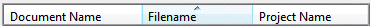
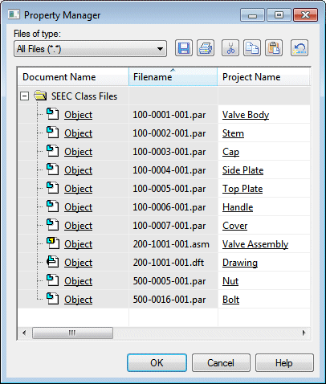
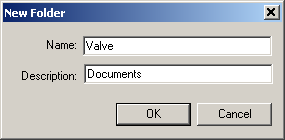

Activity: Prepare unmanaged documents for Teamcenter
After completing this activity, you will be able to:
-
Set properties in groups of files.
-
Create custom properties.
-
Perform a dry run of data import.
-
Use Add to Teamcenter to load unmanaged documents to Teamcenter.
A folder containing unmanaged files is available for use with this activity. Prepare and then load the unmanaged documents into Teamcenter.
Instructions for loading the activity files are found in Activity data set and configuration requirements. The activities assume ISO templates are loaded.
Start Solid Edge with Teamcenter enabled.
On the File menu, click Info→Property Manager.
In the Select dialog box, navigate to, and select the SEEC Class Files folder containing the files whose properties you want to define.
Click Add>> to add the folder to the Edit Properties list.
Click OK.
In the Property Manager dialog box, expand the SEEC Class Files folder by clicking the + beside the folder icon.
A warning dialog box may be displayed indicating that some files cannot be processed. This happens if there are files in the folder that do not support properties. If this warning message is displayed, click OK to dismiss the warning.
The Property Manager dialog box displays the unmanaged files that will be imported into Teamcenter. Solid Edge properties exchange as follows in Teamcenter:
|
Solid Edge |
Teamcenter |
Solid Edge File Property |
|
Teamcenter Item Type |
Item Type |
Custom |
|
Document Number |
Item ID |
Project |
|
Revision Number |
Revision |
Project |
|
Project Name |
Item Name |
Project |
|
TC Engineering Description |
Dataset Description |
Custom |
If the Document Number is left blank, a unique Item ID is automatically generated and assigned for you.
Reposition the Filename and Project Name columns to follow the Document Name column by selecting the column headings and dragging them to the left until the cell border of the Document Name column highlights.
Your column order should display as:

Sort the entries by file name by double-clicking the Filename column header.
Since the Solid Edge property Project Name becomes the Item Name in Teamcenter, edit the Project Name to reflect a short description as shown.
Leave the values for the Document Number blank.

On the Property Manager toolbar, click Save .
Click OK in the Property Manager dialog box.
Do not run Add to Teamcenter while Solid Edge is running.
Choose Start→Siemens Solid Edge 2023→Choose PDM Integration→Add to Teamcenter.
In the Add to Teamcenter dialog box, select the SEEC Class Files folder containing the files you want to add to the Teamcenter-managed environment.
Click Add to add the selected folder to the Folders and Documents To Be Added list.
To link the files that are to be added to Teamcenter to a specific folder, select the Add Documents To This Folder check box.
Click Browse for Library Folder  to select a folder from the Select Folder dialog box.
to select a folder from the Select Folder dialog box.
Sign in to Teamcenter by entering the required information in the Sign In to Teamcenter dialog box.
Click your Home folder, then click New to create a new folder. Name the new folder Valve and provide a description of Documents. Then click OK.

Click Dry Run (analyze data and report problems).
From the Overwrite list, select Prompt.
Click OK to start the dry run.
The Add to Teamcenter Status dialog box displays providing you information regarding the progress of the dry run.
When the dry run completes, the Validations Complete dialog box notifies you of warnings regarding the data validation process.
Click Summary.
The message, The document number in 100–0001–001.par is blank... indicates the Document Number property in Solid Edge was not defined. The Add to Teamcenter process will automatically assign unique document numbers for you.
For the purposes of this activity, letting the Add to Teamcenter utility automatically assign the Document Number for you is appropriate. In some cases, you may want to manually assign the Document Number property using Property Manager or the Data Preparation Utility delivered with Solid Edge.
Click OK.
-
In the Validations Complete dialog box, click Continue.
As documents are added to Teamcenter, the progress of each group of transactions is displayed at the bottom of the Add to Teamcenter Status dialog box.
Status Message Examples
-
Checking for documents...
-
Processing documents 1 to 11 of 11.
-
Loading documents 1 to 11 of 11.
The Add to Teamcenter Complete dialog box is displayed notifying you the process is complete.
-
Click OK to dismiss the Add to Teamcenter Complete dialog box.
Click OK to dismiss the Add to Teamcenter Status dialog box.
In Windows Explorer, navigate to the Add to Teamcenter log files.
The default location is \Users\<username>\AppData\Roaming\Siemens\Solid Edge\Version 223\Log Files\Add to Teamcenter
Double-click the SuccessFailureLog_<timestamp>.CSV file.
The file opens in Microsoft Excel and lists the documents you are importing, along with a summary of success or failure of the import process for each file.
Verify each of your unmanaged documents display a summary of Success.
Do not continue with the lessons until each of your unmanaged documents successfully loads into Teamcenter.
Exit the log file.
Click Cancel to dismiss the Add to Teamcenter dialog box.
In most cases, unmanaged Solid Edge documents are uploaded into the Teamcenter-managed environment by an administrator. However, in this activity, you learned more about the properties that exchange between Solid Edge and Teamcenter as well as the process involved in preparing unmanaged documents for importing into a managed environment. Also, you learned how to use Add to Teamcenter to perform a dry run and then load the documents into the managed environment.
-
List three things you should do before adding documents to a managed environment.
-
What is the significance of defining property information before adding documents to a managed environment?
-
Where do you access the Add to Teamcenter program and the Data Preparation Utility?
-
If no document number is defined, where does the value for the Item ID come from when the document is loaded into Teamcenter?
-
True or False: The log files and output files generated by Add to Teamcenter are automatically archived after each successful import of unmanaged documents into the Teamcenter-managed environment.
-
Three things you should do before adding unmanaged documents to a managed environment are:
-
Remove documents you do not want included in your managed environment.
-
Find duplicate or invalid document names.
-
Map Solid Edge properties to Teamcenter attributes.
-
-
Defining the document properties you will exchange between Solid Edge and Teamcenter prior to adding unmanaged documents to the managed environment will ensure your database will be more accurately populated from the start.
In the Teamcenter managed environment, the key attributes used to track part numbers and revisions are Item ID, Revision, and Item Name. The corresponding Solid Edge properties are displayed on the Project tab of the File Properties dialog box. Having these properties defined can minimize your future efforts.
-
The Add to Teamcenter program and Data Preparation Utility are located in Start→Siemens Solid Edge 2023.
-
If the Solid Edge Document Number property is not defined prior to adding your unmanaged document to the Teamcenter-managed environment, the Item ID is automatically generated for you in Teamcenter.
Tip:In most cases, you should define the Document Number, Revision Number and Project Name properties before loading your data into Teamcenter.
-
False — Log files and output files generated by Add to Teamcenter are not automatically archived. You should work with your system administrator to develop a system to manage the space on the computer where the Add to Teamcenter program is used.